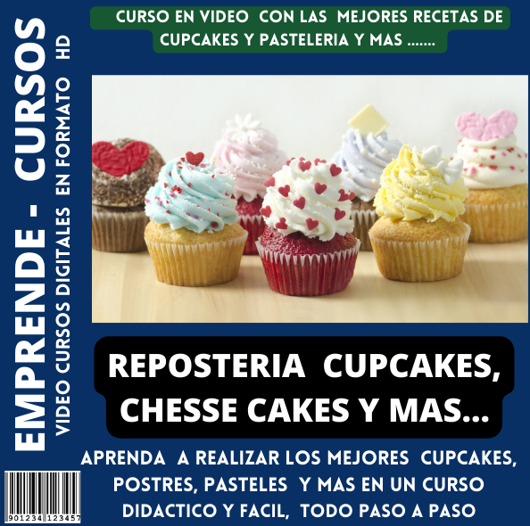
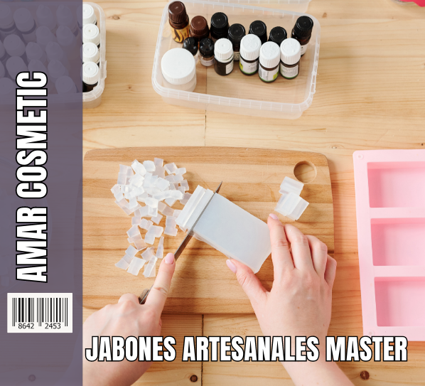
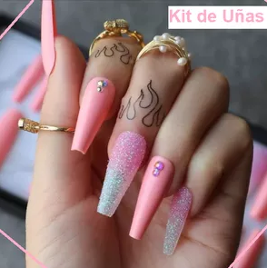
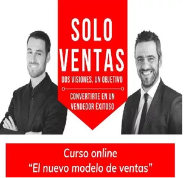
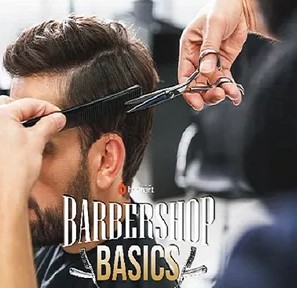

Descubre una amplia variedad de cursos para expandir tus conocimientos y alcanzar tus metas. En nuestra sección de cursos variados, encontrarás opciones fascinantes y enriquecedoras que abarcan desde habilidades creativas hasta desarrollo personal, tecnología, idiomas y más.

CURSO DE REPOSTERIA CUPCAKES , CHESSECAKES Y MAS.
En este curso de repostería, Cupcakes , Chesse cakes y más, descubrirás todo lo necesario para aprender a hornear cupcakes, hacer pasteles caseros y revelaremos las mejores receta de los chessecakes.
el curso de repostería online estará centrado en cómo hacer cupcakes , aprenderás a preparar betún de mantequilla para decorar estos pequeños pastelillos. Además, tendrás un recetario para realizar chessecakes, chessecakes pops, pasteles básicos y decorados, varios tipos de galletas, pasteles de vainilla, pasteles de chocolate, alfajores, domos ,glaseado espejo. Y más…
Ver más
Marketing digital
Es un libro completo y práctico que proporciona una guía detallada sobre cómo aprovechar al máximo las estrategias de marketing digital en el mundo actual. Escrito por un reconocido experto en marketing, el libro presenta siete principios fundamentales que son esenciales para lograr resultados exitosos en el entorno digital.
La obra comienza con una introducción al marketing digital y cómo ha transformado la forma en que las empresas se conectan con su audiencia. A lo largo de sus páginas, el autor explora en profundidad cada una de las claves para el éxito en el marketing digital, proporcionando ejemplos prácticos, consejos y técnicas probadas.
Ver más

Jabones Artesanales Master
En este curso de jabones artesanales, vas a aprender desde Cero y paso a paso a elaborar jabones de glicerina. Aprenderás a formular tus propios jabones.
Aprenderás jabones terapéuticos para las diferentes necesidades de la piel, Técnicas de diseño, jabones decorativos Y además te enseñamos a vender por redes sociales.
Ver Más
Emprende con MINI DONAS desde casa. E-book
¿Sueñas con tener tu propio negocio de repostería desde casa?
¡Entonces este e-book es ideal para ti!
Aprenderás a preparar diferentes tipos de donas: fritas, horneadas, y nuestra estrella: las MINI DONAS en máquina eléctrica. Cada una de las recetas ha sido cuidadosamente seleccionada y probada para asegurarnos de que obtengas los mejores resultados, ¡incluso si eres principiante en la repostería!
Las recetas son fáciles de preparar y requieren una inversión mínima, lo que te permitirá obtener un alto margen de ganancia. Podrás agregar tu toque personal a cada receta y hacer infinidad de variaciones para sorprender a tus clientes.
Ver Más
Excel PRO 2 en 1
Considerando que eres un profesional y que tienes aspiraciones laborales para ascender en tu trabajo y lograr un mejor nivel de vida ponemos a tu alcance el curso 🔥 “EXCEL 2 en 1” Aprende Excel de forma rápida, sencilla y fácil con el mejor curso que existe en el mercado el 🔥MEGA PACK DE EXCEL que incluye 6 niveles de aprendizaje, plantillas para descargar, videos y mucho más aparte bien con OFFICE + POWER BI + MACRO Y MICROSOFT PROJECT /MACROS Y VBA (DESDE CERO A EXPERTO) y POWER PIVOT + DAX e incluye un certificado de participación y aquí viene lo mejor el otro curso que te llevaras es 🔥“CURSO ONLINE PARA OBTENER EL CERTIFICADO MO 200 MICROSOFT EXCEL” único en su tipo con el podrás prepararte para obtener el certificado TOP de Excel para obtener el título de “MICROSOFT OFFICE SPECIALIST EXCEL 2019” te incluye 6 video módulos con sus ejercicios y plantillas, link para emuladores de exámenes, una guía detallada de como tramitar este certificado ante MICROSOFT y el link para postular, adicionalmente le incluimos dos módulos adicionales para practicar e ir por el certificado EXPERT… Así que no tienes excusa para no invertir en tu educación …
Ver Más

Super Kit de Uñas
Descubre una amplia variedad de cursos de uñas que te enseñarán diferentes técnicas paso a paso. Con nuestros videos explicativos, manuales y libros, podrás adquirir habilidades en el cuidado y embellecimiento de las uñas. Aprende cómo preparar las uñas, realizar micro extensiones de gel, difuminar colores, trabajar con pigmentos, dominar las uñas acrílicas, reparar acrílico, crear efectos humo neón, dominar la técnica de aire, diseñar uñas tipo espejo, trabajar con uñas de acrigel y crear uñas en forma de almendra. Además, recibirás bonos adicionales que incluyen más de 20 libros y un PDF con enlaces de acceso para descargar el material. Sumérgete en nuestro completo contenido y conviértete en una experta en el arte de las uñas.
Ver Más

El nuevo modelo de ventas para vender millones
El nuevo modelo de ventas es el modelo del millón. Las empresas que facturan millones usan algo similar. Con este sistema de ventas podrás vender millones de dólares o euros gracias a un método de venta profesional que se puede aplicar tanto a vendedores individuales como a equipos de ventas. Lo que permite crear una fuerza de ventas que consiga contratos y pedidos todas las semanas. Este curso incluye Audio + Ebook. Descubre más sobre el nuevo modelo de ventas en este vídeo gratuito: https://youtu.be/Of0BVGsVBg0
En el nuevo modelo de ventas todos venden al igual que pasa en el fútbol donde cualquier jugador puede meter un gol, siempre y cuando sepa chutar cuando esté enfrente de la portería. Hay cientos de ejemplos de jugadores que no son delanteros pero que definen campeonatos porque son capaces de meter un gol. De ahí que cualquier persona tenga que tener unos conocimientos mínimos en ventas en base a la posición que pueden jugar en este nuevo sistema de ventas.
Ver Más
Mega Programación Básica + Programación Avanzada
El Mega “Programación Básica + Programación Avanzada” usted encontrará fundamentos prácticos para que puedan desenvolverse en el ámbito financiero, dirigido a público en general, la administración de banca y seguro le permitirá trabajar como una herramienta que está al alcance de todos nosotros, el cual será de gran ayuda dentro de los negocios para que puedan mejorar sus emprendimientos empresariales.
Los temas que se presentan en el curso, en sus siete unidades se hacen de manera clara, acompañado de casos y videos que explican los distintos temas que se vienen desarrollando en el presente curso.
Ver Más

CURSO HIDROPÓNICO CANABICO : Como montar un sistema de Cultivo de marihuana hidropónico
CURSO MEXICANO DE HIDROPONIA que te explica a lujo de detalle como montar un sistema de cultivo de marihuana (Cannabis) a base de hidroponia con slabs de coco con la medidas y tiempos exactos para lograr su producción para lograr cosechar Cannabis..
Ver Más
CURSO DE REFRIGERACION Y AIRES ACONDICIONADOS
Fundamentos de física y las leyes de la termodinámica:
Fundamentos de termodinámica.
Ciclo frigorífico.
Gases refrigerantes y sus características y diferencias entre sí.
Uso de la tabla presión – temperatura de refrigerantes.
Principios de la refrigeración y sus componentes.
Evaporadores, compresores y condensadores.
Elementos de expansión y controles de temperatura y presión.
Utilización de herramientas para refrigeración.
Electricidad aplicada:
Fundamentos de la electricidad y los circuitos eléctricos.
Electromagnetismo.
Potencia eléctrica, la inducción, transformadores y capacitores.
Uso de la pinza amperométrica.
Refrigerador y freezer:
Funcionamiento del refrigerador familiar con frío seco.
Circuito eléctrico del refrigerador.
Identificar y resolver fallas en refrigeradores.
Identificar y resolver fallas en refrigeradores con frío seco.
Prueba de rendimiento del compresor.Funcionamiento del refrigerador familiar con frío seco.
Circuito eléctrico del refrigerador.
Identificar y resolver fallas en refrigeradores. Y mucho mas
Ver Más
Capacitación en Dermatología
El curso está dirigido a toda persona mayor de 17 años, con o sin experiencia previa, que esté interesada en obtener nuevos conocimientos, o actualizar los ya adquiridos previamente, sobre los distintos temas abordados en dicho curso para, finalmente, obtener su tan preciada certificación oficial que acredite los conocimientos para poder desarrollarse en el ámbito laboral deseado.
Todo el material de estudio se descarga desde nuestra plataforma. El alumno debe ingresar con el email y contraseña que se le genera una vez efectuada la compra. La plataforma está disponible las 24 hs. del día y se puede tener acceso desde cualquier computadora o celular.
El curso es evaluado mediante cuestionarios multiple choice. Es 100% On line. El material contenido es: Pdf, cuestionarios (exámenes) automáticos con resultado al instante, selección de los mejores videos para el curso, bibliografía recomendada y estamos incorporando audiolectura. Todos estos contenidos se pueden reveer.
Ver Más

Barberia Barber Shop Basics
Descubre la barbería y sé un barbero exitoso. Las barberías están en auge y ofrecen oportunidades de negocio increíbles. Los hombres se preocupan cada vez más por su apariencia y buscan estar impecables en todo momento, lo que ha dado lugar a la aparición de nuevas barberías y un mercado en constante evolución.
Nuestro exclusivo MasterClass te enseñará a triunfar como barbero, sin importar tu nivel de experiencia. Aprenderás desde cero, adquiriendo las habilidades y conocimientos necesarios.
Te proporcionaremos las herramientas básicas para destacar en tu trabajo. Conocerás las diferentes medidas de las máquinas y aprenderás los estilos de corte más solicitados y las últimas tendencias.
Ver Más